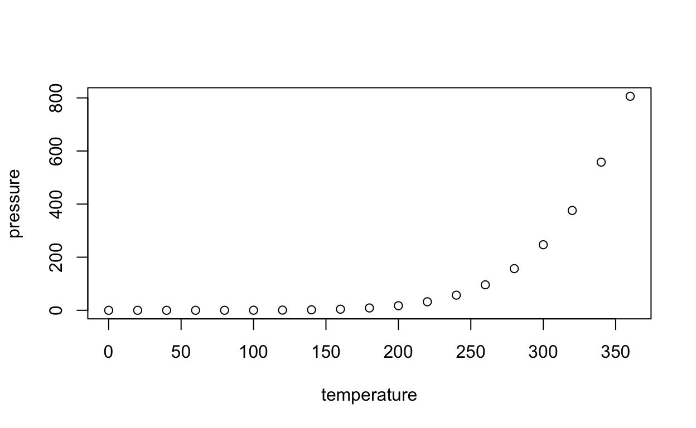

My final project
This is an R Markdown document. Markdown is a simple formatting syntax for authoring HTML, PDF, and MS Word documents. For more details on using R Markdown see http://rmarkdown.rstudio.com.
When you click the Knit button a document will be generated that includes both content as well as the output of any embedded R code chunks within the document. You can embed an R code chunk like this:
summary(cars) speed dist
Min. : 4.0 Min. : 2.00
1st Qu.:12.0 1st Qu.: 26.00
Median :15.0 Median : 36.00
Mean :15.4 Mean : 42.98
3rd Qu.:19.0 3rd Qu.: 56.00
Max. :25.0 Max. :120.00 You can also embed plots, for example:

Note that the echo = FALSE parameter was added to the code chunk to prevent printing of the R code that generated the plot.
For my project I have decided to examine data related to elections from 1998 to 2020 to see what variables have caused polls to be inaccurate. Going into the project, I assumed that polls were, generally speaking, biased towards democrats given the inaccurate polls during the 2016 election. More broadly, as a result of the shock of the 2016 election, public confidence in polls and election predictions generally has plummeted. This has meant that some voters completely disconnect themselves from viewing political news before elections because they don’t trust polls and the media. To understand why polls can be inaccurate, I looked at two main explanatory variables: sample size and the way the polls were conducted.
library(infer)
library(tidyverse)
Rawpolls <- read_csv("raw-polls.csv")
mediabias <- read_csv("pollster-ratings.csv")
Rawpolls <- Rawpolls |>
mutate(bias_direction = if_else(bias >= 0, "left_bias", "right_bias"),
partisanerror_size = case_when(
bias > 0 & bias < 3 ~ "leftlean",
bias >= 3 & bias <= 7 ~ "moderateleft",
bias > 7 ~ "hardleft",
bias > -3 & bias < 0 ~ "leanright",
bias <= -3 & bias >= -7 ~ "moderateright",
bias < -7 ~ "hardright", # Added missing operator (<) to compare bias with -7
TRUE ~ NA_character_ # Add a catch-all condition if none of the above criteria match
)
)
Rawpolls <- Rawpolls |>
mutate(
bias_direction = if_else(bias >= 0, "left_bias", "right_bias"),
partisanerror_size = case_when(
bias > 0 & bias < 3 ~ "leftlean",
bias >= 3 & bias <= 7 ~ "moderateleft_bias",
bias > 7 ~ "hardbias_left",
bias > -3 & bias < 0 ~ "leanright",
bias <= -3 & bias >= -7 ~ "moderateright_bias",
bias < -7 ~ "hardbias_right", # Added missing operator (<) to compare bias with -7
TRUE ~ NA_character_ # Add a catch-all condition if none of the above criteria match
)
)
Rawpolls <- Rawpolls |>
mutate(swingstate = if_else(margin_poll < 6 & margin_poll > -6, "swingrace", "blowout"),
sampletype = case_when(samplesize < 500 ~ "smallsample",
samplesize >= 500 & samplesize <= 750 ~ "mediumsample",
samplesize > 750 ~ "Large_sample"))
biastotal <- Rawpolls |>
filter(year %in% c(2016, 2018, 2020, 2022)) |>
group_by(pollster, bias_direction) |>
summarize(pollerror = mean(bias)) |>
drop_na(pollerror) |>
ggplot(mapping = aes(x = pollerror, fill = ifelse(pollerror > 0, "Democratic", "Republican"))) +
geom_histogram(binwidth = 1) +
scale_fill_manual(values = c("steelblue1", "indianred1")) +
labs(x = "Direction of Poll bias", y = "Count of Polls")
biastotalAs we can see, polling errors over the last 20 years are fairly evenly distrubited between Democrats and Republicans. But why are there errors in the first place? My research question: Is there a relationship between the way polls are conducted and the accuracy of the polls and how does sample size affect accuracy? My hypothesis was that polls that had larger sample sizes and those that were not conducted by live phone would prove to be the most accurate. This is because of ‘cancellation fear’ that many Trump supporters, particularly females, had in 2016 that made them afraid to admit support for candidate Trump to a live person.
If I observe that polls with a larger sample size had lower mean errors, then this would support my hypothesis. If I observe that polls that were conducted by Interactive Voice Response (IVR) (an automated telephone system where a person speaks to a robot who recitates pre-recorded messages or texts-to-speech) polls were more accurate than live or mail polls, this would also support my hypothesis. Again, this is because a ‘quiet’ Trump supporter might feel more comfortable revealing their true opinions to a robot than a human
This study will be informative for the purposes of identifying what types of polls are most accurate and if large sample sizes are actually necessary. Polls with large sample sizes can be more expensive to conduct; If we cannot prove that larger sample sizes increase accuracy then we can show polling organizations that they are not necessary.
I analyze data from elections from 1998-2020, which includes data from congressional and federal elections. I gained this data from 538’s database on elections. My data comes from two different datasets – one that focuses on different election results / poll error / and another that focuses on the methodologies of the pollster. The datasets include variables such as year, race, location, sample size, the margin predicted by the polls and the actual margin in the election. According to 538 (source of data), The ‘error’ column is the “Absolute value of the difference between the actual and polled result. This is calculated as abs(margin_poll - margin_actual) "biasis calculated only for races in which the top two finishers were a Democrat and a Republican. It is calculated asmargin_poll - margin_actual`. Positive values indicate a Democratic bias (the Democrat did better in the poll than the election). Negative values indicate a Republican bias.”
The first data analysis topic I covered was comparing errors for polls with a small sample size and polls with a large sample size. Small sample type is defined as those samples where the sample size was less than 500 (25th percentile of sample size) and the large_sample was defined as those samples where the sample size was greater than 850 (75th percentile).
quantile(Rawpolls$samplesize, probs = 0.25)25%
500 quantile(Rawpolls$samplesize, probs = 0.75)75%
850 samples.error <- Rawpolls |>
group_by(sampletype) |>
summarize(avg.error = mean(error)) |>
pivot_wider(names_from = sampletype, values_from = avg.error) |>
mutate(ATE = Large_sample - smallsample) |>
select(c(Large_sample, smallsample, ATE)) |>
knitr::kable(col.names = c("Large Sample", "Small Sample", "ATE"), digits = 3)
samples.error| Large Sample | Small Sample | ATE |
|---|---|---|
| 4.708 | 7.409 | -2.701 |
In this first plot, we can see that polls with a large sample size averaged a 4.7 error while polls with a small sample size averaged a 7.409 error. This means that large sample size polls were 2.7 points more accurate. As we can see the treatment effect of having a larger sample size reduced polling error by 2.7 points for this dataset. To see if this is statistically significant or just do to random chance I ran a p-value test under the null hypothesis that there should be no difference in polling error for small vs large sample sizes.
Rawpolls# A tibble: 9,559 × 33
poll_id question_id race_id year race location type_simple
<dbl> <dbl> <dbl> <dbl> <chr> <chr> <chr>
1 54373 87909 1455 1998 1998_Gov-G_… NY Gov-G
2 26255 87926 1456 1998 1998_Gov-G_… OH Gov-G
3 26026 31266 1736 1998 1998_Sen-G_… NV Sen-G
4 26013 31253 1738 1998 1998_Sen-G_… NY Sen-G
5 63632 117103 1738 1998 1998_Sen-G_… NY Sen-G
6 26255 31495 1741 1998 1998_Sen-G_… OH Sen-G
7 64053 117875 1966 1998 1998_House-… ID-1 House-G
8 64053 117876 1967 1998 1998_House-… ID-2 House-G
9 28268 33546 8661 1998 1998_House-… US House-G
10 28267 33545 8661 1998 1998_House-… US House-G
# ℹ 9,549 more rows
# ℹ 26 more variables: type_detail <chr>, pollster <chr>,
# pollster_rating_id <dbl>, polldate <chr>, samplesize <dbl>,
# cand1_name <chr>, cand1_party <chr>, cand1_pct <dbl>,
# cand2_name <chr>, cand2_party <chr>, cand2_pct <dbl>,
# cand3_pct <dbl>, margin_poll <dbl>, electiondate <chr>,
# cand1_actual <dbl>, cand2_actual <dbl>, margin_actual <dbl>, …ate1 <- Rawpolls |>
filter(sampletype %in% c("Large_sample", "smallsample")) |>
specify(error ~ sampletype) |>
calculate(stat = "diff in means", order = c("Large_sample", "smallsample"))
ate1Response: error (numeric)
Explanatory: sampletype (factor)
# A tibble: 1 × 1
stat
<dbl>
1 -2.70ate_rawpolls_dust <- Rawpolls |>
filter(sampletype %in% c("Large_sample", "smallsample")) |>
specify(error ~ sampletype) |>
hypothesize(null = "independence") |>
generate(reps = 1000, type = "permute") |>
calculate(stat = "diff in means", order = c("Large_sample", "smallsample"))
ate_rawpolls_dust |> visualize() +
shade_p_value(obs_stat = ate1, direction = "both") ate1_pvalue <- get_p_value(ate_rawpolls_dust, obs_stat = ate1, direction = "both")
ate1_pvalue# A tibble: 1 × 1
p_value
<dbl>
1 0| pvalue |
|---|
| 0 |
(The red line is the -2.7 ATE calculated in the above)
This shows that under the null hypothesis where the sample size has no effect on polling error, the chance that we would observe a result where large sample sizes were 2.7 points more accurate is, highly, unlikely. The P value is 0, and it does not even fall on the distribution of possible outcomes. In fact, based on the distributon above, it is only likely that we could observe a difference of 0.5 on either direction.
As a result, we can reject the null hypothesis. This means that the -2.7 ATE calculated above is statistically signifigant Further evidence of sample sizes effect on poll accuracy comes from a regression I did later.
Rawpolls |>
filter(samplesize < 5000) |>
ggplot(mapping = aes(x = samplesize, y = error)) +
geom_point() + # Scatterplot of samplesize vs. error
geom_smooth(method = "loess", se = FALSE, color = "blue") +
scale_x_log10() Rawpolls |>
filter(samplesize > 1000)# A tibble: 1,568 × 33
poll_id question_id race_id year race location type_simple
<dbl> <dbl> <dbl> <dbl> <chr> <chr> <chr>
1 26208 31448 1723 1998 1998_Sen-G_… CT Sen-G
2 54342 87878 1450 1998 1998_Gov-G_… MN Gov-G
3 26050 87927 1456 1998 1998_Gov-G_… OH Gov-G
4 26050 31290 1741 1998 1998_Sen-G_… OH Sen-G
5 54292 87828 1443 1998 1998_Gov-G_… IL Gov-G
6 26083 31323 1728 1998 1998_Sen-G_… IL Sen-G
7 54215 87751 1436 1998 1998_Gov-G_… CA Gov-G
8 54247 87783 1439 1998 1998_Gov-G_… FL Gov-G
9 54259 87795 1440 1998 1998_Gov-G_… GA Gov-G
10 54293 87829 1443 1998 1998_Gov-G_… IL Gov-G
# ℹ 1,558 more rows
# ℹ 26 more variables: type_detail <chr>, pollster <chr>,
# pollster_rating_id <dbl>, polldate <chr>, samplesize <dbl>,
# cand1_name <chr>, cand1_party <chr>, cand1_pct <dbl>,
# cand2_name <chr>, cand2_party <chr>, cand2_pct <dbl>,
# cand3_pct <dbl>, margin_poll <dbl>, electiondate <chr>,
# cand1_actual <dbl>, cand2_actual <dbl>, margin_actual <dbl>, …This visualization shows that the optimal number of participants is around 750. After that, there are decreasing returns to increasing poll sample size, as the slope of the line begins to flatten. Past a 1,000 poll sample size (which is 16.4% of polls in the data), there is very little improvement in reducing poll error. This suggests that extremely large polls can be a waste of time and resources and should be discontinued for future elections. Instead new ideas about how to improve polling could be better focused by thinking about how polls are conducted.
Moving on to my discussion of the way in which the polls were conducted, the following graph summarizes mean errors for 17 different polling methods. The graph also contains error bars which, at the bottom, represent the average error - a standard deviation and the top bar which represents the average error plus a standard deviation. This gives viewers a sense of how spread out the errors were for each polling method.
mediabias_summary <- mediabias |>
group_by(Methodology) |>
summarize(avg.error = mean(`Simple Average Error`),
sd.error = sd(`Simple Average Error`),
diff = avg.error - mean(`Simple Average Error`))
mediabias.plot <- ggplot(mediabias_summary, aes(x = Methodology, y = avg.error)) +
geom_bar(stat = "identity", fill = "skyblue", alpha = 0.7) +
geom_errorbar(aes(ymin = avg.error - sd.error, ymax = avg.error + sd.error),
width = 0.3, position = position_dodge(0.9)) +
labs(x = "Methodology", y = "Average Error", title = "Average Error by Methodology") +
theme_minimal() +
theme(axis.text.x = element_text(angle = 45, hjust = 1))
plot2 <- mediabias.plot +
scale_y_continuous(breaks = seq(0, 15, by = 5))
plot2This visualization may confirm my hypothesis that polling that is live over a telephone is less accurate than online polling (where supporters don’t have to fear repercussions over unpopular political opinions). The Methodology with the largest average error and the largest spread of the errors is the Landline method, where a representative from a polling company calls samplants using traditional landline telephones. Further, pollsters that used landline methodology had much higher misses outside margin of error, predicted fewer races accurately and, on average, their polls were very biased in favor of democrats. This suggests that conservative voters may have been shy about voicing their true opinions over the phone.
However, it is important to note that only 6 pollsters (out of 453) in the mediabias dataset used Landline methodology, representing only 1.3% of the pollsters. Further, other methods that involved live interaction between humans such as live and live* did not experience such unusually high and spread out errors. Further, many more pollsters in this dataset used live and live than landline,* meaning that the sample size is sufficient to make a judgement.
Different IVR polling methods (automated polling methods) had average errors that were generally distributed around 5.5. From this, it is difficult to make a firm conclusion about which polling methods will best minimize error. In order to better understand which Methodoligies minimized erros, I did a multi-variable regression; grouping the methodologies by 6 categories: live, IVR, text, online, landline, and mail.
#text, online, landline, mail, live, IVR
mediabias <- mediabias |>
mutate(
is_live = if_else(str_detect(Methodology, "Live"), 1, 0),
is_IVR = if_else(str_detect(Methodology, "IVR"), 1, 0),
is_text = if_else(str_detect(Methodology, "Text"), 1, 0),
is_online = if_else(str_detect(Methodology, "Online"), 1, 0),
is_landline = if_else(str_detect(Methodology, "Landline"), 1, 0),
is_mail = if_else(str_detect(Methodology, "Mail"), 1, 0)
)
model5 <- lm(`Simple Average Error` ~ is_live + is_IVR + is_text + is_online + is_landline + is_mail, data = mediabias) |>
broom::tidy() |>
select(term, est=estimate, se=std.error, pval = p.value)
knitr::kable(model5, digits = 3, col.names = c("Polling Method", "Coefficient Estimate", "Standard Error", "P-Value"))| Polling Method | Coefficient Estimate | Standard Error | P-Value |
|---|---|---|---|
| (Intercept) | 6.718 | 0.658 | 0.000 |
| is_live | -0.343 | 0.625 | 0.584 |
| is_IVR | 0.320 | 0.608 | 0.599 |
| is_text | -0.080 | 1.003 | 0.937 |
| is_online | -0.303 | 0.529 | 0.567 |
| is_landline | 6.516 | 1.909 | 0.001 |
| is_mail | -1.618 | 4.438 | 0.716 |
This regression shows that when the polling is live, errors go down by -.343 on average, holding other methods constant. It also shows, to my surprise, that when the polling method was IVR (automated polling method), the average errors went up by .320. However, since the P value for this is .590, I do not interpret this as being statistically significant as a .320 increase is a small number and acceptable under the null that the coefficient is 0. There could be also confounders such as disparities in access and eagerness to respond to IVR technology, partisan differences in likelihood to respond to IVR, or demographic characteristic differences such as race, age, gender or location.
In conclusion, the data shows that polls have not been overwhelmingly biased toward one party over the other. It does show that polls with a sample size that is around 850 (the 75th percentile of sample size) tend to be 2.7pts more accurate than polls with a smaller sample size below 500 (25th percentile of sample size). The regression suggests that there may be diminishing returns to reducing poll error as sample size increases. While there was some evidence to support my thesis that polling methodologies that included human-to-human contact induced more polling errors, there were many limitations to this aspect of the study, such as sufficient sampling. Another limitation to the mediabias dataset was that, FiveThirtyEight (source of data), did not define what many of the polling methodologies were in the readme file. I was able to google many of definitions on the internet, but different polling organizations sometimes define different specific methodologies differently. As a result, I was limited in my ability to identify the polling methodology that limited errors. This study could have been improved if perhaps we also had polling data from other countries with two major political parties, such as Canada and the United Kingdom. This could have assisted in my analysis of identifying which polling methodoligies were most accurate.
```{.r .distill-force-highlighting-css}